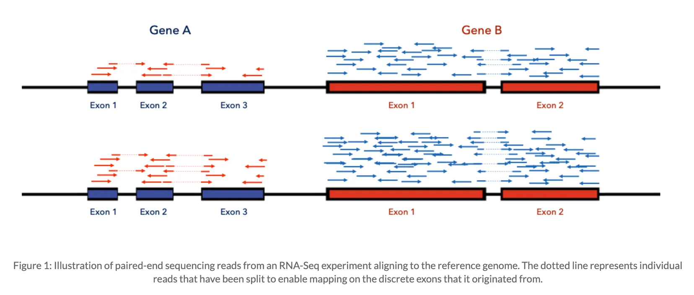
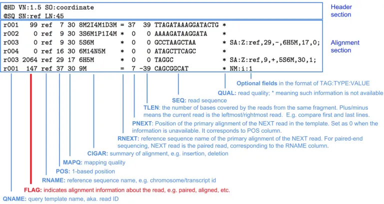

Alineamientos y cuentas#
Alineamientos#
Una vez revisada la calidad de las lecturas, se realiza el alineamiento o mapeo de estas a un genoma de referencia (o al transcriptoma ensamblado a partir de estas mismas lecturas). Existen varios programas, por ejemplo GSNAP, HISAT2, STAR, BWA, Salmon,.

El objetivo de este paso es entender cuantas lecturas se alinean con cada gen
 https://biobox-analytics.medium.com/sequencing-alignment-for-beginners-9687c0dcfc67El output del alineamiento es un archivo .sam (Sequence Alignment/Map), compuesto por una tabla con la información del alineamiento de todas las lecturas que alinearon. Por esta razón es un archivo muy extenso y pesado, el cual se puede convertir en un archivo binario .bam
Cada linea contiene 11 campos obligatorios para información esencial sobre el mapeo. El siguiente es un ejemplo de archivo sam.
 https://bioinformaticamente.com/2021/03/03/sam-bam/Cuentas#
Luego viene el paso de cuantificación. Esta se puede realizar con herramientas como htseq-count or FeatureCounts. La cuantificación de reads alineados produce una tabla de IDs de genes y sus cuentas. Revise los resultados, por ejemplo de 2 muestras diferentes, una de D. melanogaster y otra de D. sechellia:
lauraalazar/RNAseq-Drosophila-parasitoids lauraalazar/RNAseq-Drosophila-parasitoids Verá una columna con los ID provenientes de Flybase, la base de datos para Drosophila.
Expresión Diferencial#
El siguiente paso es entender cuales de esos genes se están expresando a un nivel basal, y cuales se expresan en respuesta a un estímulo. Es decir, cómo saber qué genes se están sobre-expresado o sub-expresado? Para esto necesitamos
normalizar las cuentas, y existen varias metodologías para esto (listar).
comparar los controles con el tratamiento. En este caso, se utilizó edgeR para la comparación estadística. Esta herramienta utiliza una distribución baseline de genes para estimar rangos de expresión, y luego, para cada gen, compara la expresión del tratamiento vs controles determinar una expresión diferencial significativa
Fold Change: cambio relativo en la expresión de un gen con respecto a una referencia, por ejemplo controles vs tratamiento. Por ejemplo, un aumento de 2 veces (2-fold) indica que la expresión de un gen se ha duplicado (\(2*genx_{par} = 2*genx_{ctl}\)), mientras que un valor de 0.5-fold indica una disminución a la mitad.
\(log_2(1) = 0\)
\(log_2(2) = 1\)
\(log2(0.5) = -1\)
CPM: counts per million es el número de lecturas de un gen que se observarían por cada millón de lecturas totales en la muestra.
Siguiendo con el estudio de caso de las mosquitas Drosophilas, algunos de los genes que dieron significativos para la expresión diferencial entre muestras parasitadas y control se pueden consultar en la tabla: lauraalazar/RNAseq-Drosophila-parasitoids Vamos a analizar el gen Tep1, que tiene un identificador en Flybase FBgn0041183
Vamos a descargar dos archivos con las cuentas de este gen en las muestras de control y pasaritadas https://raw.githubusercontent.com/lauraalazar/Online_BioComp/refs/heads/master/melS1_FBgn0041183.txt https://raw.githubusercontent.com/lauraalazar/Online_BioComp/refs/heads/master/melS1_FBgn0041183.txt
Análisis de gen con expresión diferencial#
# Cargar las cuentas para las muestras de D. melanogaster para el gen Tep1
setwd("docencia/eafit/comp_bio/2024-2/alineamiento_cuentas/")
cuentas_mel <-read.table("melS1_FBgn0041183.txt", header=T)
# cuales son las muestras control?
mel.ctl <- which(cuentas_mel$tratamiento=="ctl")
mel.ctl
# creamos una variable para las muestras control
mel.cuentas.ctl<-cuentas_mel[ctl,] #esta forma de escribirlo significa que las hileras son las ctl y no se espcifica las columnas (las despliega todas)
# creamos una variable para las muestras parasitadas
mel.par <- which(cuentas_mel$tratamiento=="par")
mel.par
mel.cuentas.par<-cuentas_mel[par,]
# Hallamos las medias de las cuentas, que cree de la expresion de esots genes?
mel.mean.ctl<-mean(mel.cuentas.ctl$cuentas)
mel.mean.ctl
mel.mean.par<-mean(mel.cuentas.par$cuentas)
mel.mean.par
# Graficamos las cuentas del grupo ctl vs par
boxplot(cuentas_mel$cuentas~cuentas_mel$tratamiento,xlab = "tratamiento",ylab = "cuentas", main="Expresión de gen FBgn0041183")
#
Intermezzo ggplot#
Una libreria muy utilizada en R es ggplot2. Esta despliega figuras estéticas y es versátil para personalizar propiedades visuales. https://datacarpentry.org/R-ecology-lesson/instructor/04-visualization-ggplot2.html
# install.packages(ggplot2) # si no tiene la librería, instálela (removiendo el símbolo de comentario)
library(ggplot2)
# los parametro mínimos: la base de datos (cuentas_mel) y la estética (aes()) que produce los ejes
ggplot(cuentas_mel,aes(tratamiento,cuentas)) + # con cada "+" vamos incluyendo capas de complejidad
geom_boxplot() # en forma de boxplot
ggplot(cuentas_mel,aes(tratamiento,cuentas)) +
geom_boxplot() +
geom_jitter(color = "blue") # define los puntos y opcionalmente el color
# y así se pueden incluir capas
ggplot(cuentas_mel,aes(tratamiento,cuentas)) +
geom_boxplot() +
geom_jitter(color = "blue") +
ggtitle("Expresión de gen FBgn0041183") #personaliza el título
Ahora vamos a combinar los dos dataset para generar una gráfica unificada
# Primero hay que incluir una columna en cada dataset que defina la especie, llamada "sp"
cuentas_mel$sp <- rep("mel",6) # creamos un vector que repite "mel" 6 veces
cuentas_sec$sp <- rep("sec",6) # creamos un vector similar para sec
# Union de los dos dataset
cuentas_2spp <- rbind(cuentas_mel,cuentas_sec)
cuentas_2spp
# Por último vamos a generar una gráfica con las dos especies
ggplot(cuentas_2spp,aes(tratamiento,cuentas)) +
geom_boxplot() +
geom_jitter(color = "blue") +
facet_wrap(facets = vars(sp)) +
ggtitle("Expresión de gen Tep1 en D. melanogaste y D. sechellia")